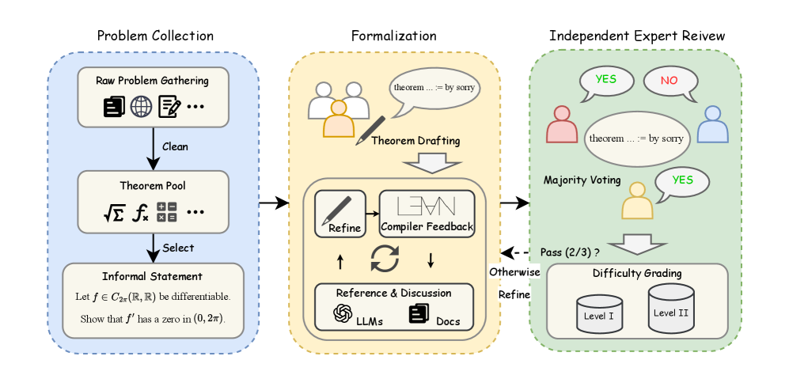

Introduces MA-ProofBench, 200 Lean 4 formal theorems in mathematical analysis, and evaluates LLMs and theorem provers on them.
Abstract
Large Language Models (LLMs) have made notable progress in automated theorem proving, yet existing formal benchmarks remain limited in both mathematical coverage and difficulty. Most are concentrated in areas that are easier to formalize, such as algebra and elementary number theory, and provide limited coverage of subfields that require deeper reasoning, including mathematical analysis. To address this gap, we introduce MA-ProofBench, to the best of our knowledge, the first formal theorem-proving benchmark dedicated to Mathematical Analysis. The benchmark contains 200 formalized theorems covering 6 core topics and 27 subcategories, including measure and integration theory, complex analysis, and functional analysis. The problems are divided into two difficulty levels, an undergraduate level (Level I, 100 problems) and a Ph.D. qualifying level (Level II, 100 problems), to evaluate how well LLMs perform formal reasoning at different mathematical depths. Each problem is constructed through a human-led, LLM-assisted formalization pipeline followed by independent expert review, ensuring that the formal statements remain faithful to the original mathematics. We evaluate a range of recent general-purpose reasoning models and formal theorem provers on MA-ProofBench. However, most models perform poorly: even the best-performing model, GPT-5.5, achieves only 16% Pass@8 on Level I and 5% on Level II, while most models stay close to 0% on Level II. Further analysis identifies Mathlib hallucinations and incomplete proofs as the two dominant failure modes, while an evaluation on the natural-language version of the benchmark exposes a clear gap between informal and formal reasoning. MA-ProofBench is intended to serve as a reliable reference for tracking progress in formal mathematical reasoning in advanced domains.
Problem
Existing formal theorem-proving benchmarks concentrate on algebra and elementary number theory and underrepresent mathematical analysis, which requires joint reasoning about continuity, limits, and topological structure. Several are also saturated (e.g. miniF2F) or contain semantic flaws.
Approach
MA-ProofBench provides 200 Lean 4 formal theorems spanning 6 core analysis topics and 27 subcategories, split into an undergraduate tier (Level I, 100 problems) and a Ph.D.-qualifying tier (Level II, 100 problems). Each problem comes from a human-led, LLM-assisted formalization pipeline with independent expert review. Models are evaluated on Mathlib 4.28.0 with the Kimina Lean Server as backend, scored with Pass@k.

Figure 3: Overview of the curation workflow of MA-ProofBench, comprising Problem Collection, Formalization, Independent Expert Review, and Difficulty Grading.
Results
Most models perform poorly: the best, GPT-5.5, reaches only 16% Pass@8 on Level I and 5% on Level II, while most models stay near 0% on Level II. Mathlib hallucinations and incomplete proofs are the dominant failure modes, and a natural-language version exposes a clear informal-to-formal gap.